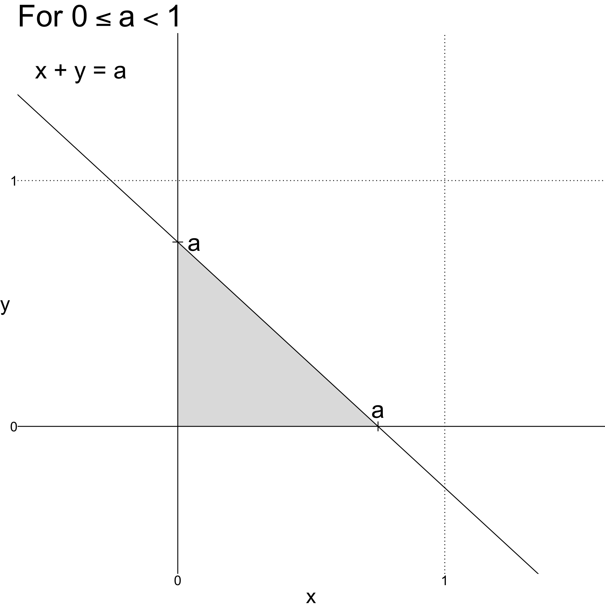
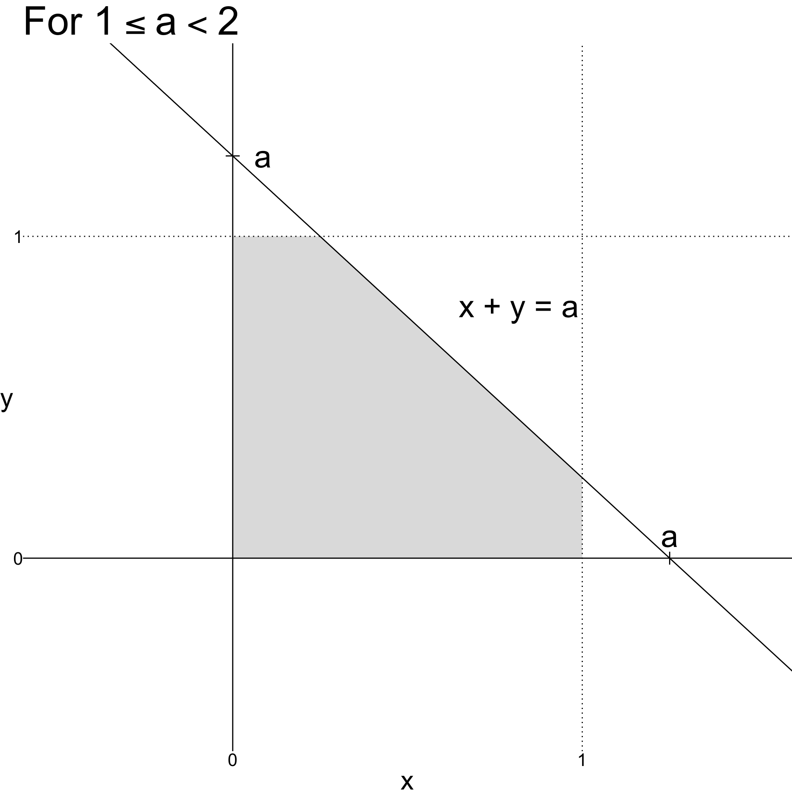

\(T_1\) |
|||
|---|---|---|---|
| 1 | 2 | ... | |
| \(T_2\) | |||
| 1 | \(p_1(1)p_2(1)\) | \(p_1(2)p_2(1)\) | \(\cdots\) |
| 2 | \(p_1(2)p_2(1)\) | \(p_1(2)p_2(2)\) | \(\ddots\) |
| ... | \(\vdots\) | \(\vdots\) | \(\vdots\) |
STA237: Probability, Statistics, and Data Analysis I
Michael Jongho Moon
PhD Student, DoSS, University of Toronto
June 13, 2022
(Adopted from Devore & Berk Chapter 5 Exercise 9 & 44)
Each tire of a bicycle is supposed to be filled to a pressure of 40 psi. Suppose the actual air pressure in each tire is a random variable - \(X\) for the right tire and \(Y\) for the left tire, with joint probability density function
\[f\left(x,y\right)=\begin{cases}K\left(x^2+y^2\right) & 20 \le x \le 50, 20 \le y \le 50 \\ 0 & \text{otherwise.}\end{cases}\]
\(X\) is the pressure of the right tire and \(Y\) is the pressure of the left tire, with joint probability density function
\[f\left(x,y\right)=\begin{cases}K\left(x^2+y^2\right) & 20 \le x \le 50, 20 \le y \le 50 \\ 0 & \text{otherwise.}\end{cases}\]
What is the value of \(K\)?
\[\implies K = \frac{1}{2\ 340\ 000}\]
What is \(P(X<40, Y<40)\)?
\[\implies P(X<40, Y<40)=\frac{112}{351}\]
\(X\) is the pressure of the right tire and \(Y\) is the pressure of the left tire, with joint probability density function
\[f\left(x,y\right)=\begin{cases}K\left(x^2+y^2\right) & 20 \le x \le 50, 20 \le y \le 50 \\ 0 & \text{otherwise.}\end{cases}\]
What is the marginal probability density function of \(X\)?
What is the marginal cumulative distribution function of \(X\)?
\[ f_X(x)=\begin{cases}\frac{x^2}{78\ 000} +\frac{13}{780} & 20\le x \le 50 \\ 0 &\text{otherwise.}\end{cases}\quad\]
\[ F_X(a)=\begin{cases}0 & x <20 \\\frac{1}{234\ 000}a^3+\frac{1}{60}a-\frac{43}{117} & 20\le a \le 50 \\ 1 & x > 50\end{cases}\]
\(X\) is the pressure of the right tire and \(Y\) is the pressure of the left tire, with joint probability density function
\[f\left(x,y\right)=\begin{cases}K\left(x^2+y^2\right) & 20 \le x \le 50, 20 \le y \le 50 \\ 0 & \text{otherwise.}\end{cases}\]
Are \(X\) and \(Y\) independent?
No, because we can’t factor
\(f(x,y)\) into \(f_X(x)\cdot f_Y(y)\).
What is the conditional cumulative distribution function of \(Y\) given \(X\le a\)?
How about when \(20\le a \le 50\) and \(b > 50\)?
Now suppose, wheels are taken off a bicycle and you randomly choose one of the tires to check its pressure. What is the expected pressure of the selected tire? Let \(W=0\) if you select the right tire, \(W=1\) if you select the left tire, and \(V\) be the final pressure measurement.
What is the distribution of \(W\)?
\[W\sim \text{Ber}\left(\frac{1}{2}\right)\]
What is the conditional distribution of \(V\) given \(W\)?
\[\implies f_{V|W}(v)=f_X(v)\]
How about the marginal distribution of \(V\)?
Michael and William are planning for a bikepacking trip for 7 days. Suppose there is \(p=\frac{1}{5}\) of a tube failure on any given day during the trip. How many extra tubes should each bring?
Assume Michael and William change to a new pair of tubes for both front and rear wheels whenever there is a tube failure.
Let \(T_i\) be the number of days until \(i\)th tube fails. We can model its distribution as
\[T_i\sim\text{Geom}\left(\frac{1}{5}\right)\]
assuming the probability of failure per day doesn’t change over the period of the trip.
\(T_i\sim\text{Geom}(1/5)\) is the number of days until \(i\)th tube fails.
Michael decides to compute \(E(T_1 + T_2 - 1)\) and check whether it is larger than 7. If it is, Michael plans to bring only pair of extra tubes for the trip.
Michael thus concludes one more extra pair will last him about 10 days and decides to bring only 1 extra pair.
\(T_i\sim\text{Geom}(1/5)\) is the number of days until \(i\)th tube fails.
William listens to Michael’s decision and wonders what the probability that \(T_1 + T_2 - 1 < 7\) is.
\[P(T_1 + T_2 < 8) = ?\]
\(T_1\) |
|||
|---|---|---|---|
| 1 | 2 | ... | |
| \(T_2\) | |||
| 1 | \(p_1(1)p_2(1)\) | \(p_1(2)p_2(1)\) | \(\cdots\) |
| 2 | \(p_1(2)p_2(1)\) | \(p_1(2)p_2(2)\) | \(\ddots\) |
| ... | \(\vdots\) | \(\vdots\) | \(\vdots\) |
\(P(T_1 +T_2 < 7)= \sum_{m=2}^6P(T_1 +T_2 = m)\)
\(P(T_1 + T_2 = 2) = p_1(1)p_2(1)\)
\(P(T_1 + T_2 = 3) = p_1(1)p_2(2) + p_1(2)p_2(1)\)
\(\vdots\)
\(\sum_{m=2}^7P(T_1 +T_2 = m)=0.423\)
Let \(X\) and \(Y\) be two independent discrete random variables, with probability mass function \(p_X\) and \(p_Y\). Then, the probability mass function \(p_Z\) of \(Z=X+Y\) satisfies
\[p_Z(c)=\sum_{i}p_X\left(c-b_i\right)\cdot p_Y\left(b_i\right),\]
where the sum runs over all possible values \(b_i\) of \(Y\).
Suppose \(X\) and \(Y\) are independent random variables where
\[X\sim \text{Bin}\left(n_1, p\right)\]
and
\[Y\sim\text{Bin}\left(n_2, p\right).\]
Let \(Z=X+Y\). What is the distribution of \(Z\)?
\[P(Z = z)=\sum_{y=0}^z p_X(z-y)\cdot p_Y(y)\]
What is \(\sum_{y=0}^z \binom{n_1}{z-y}\binom{n_2}{y}\)?
Suppose \(X\) and \(Y\) are independent random variables where
\[X\sim \text{Bin}\left(n_1, p\right)\]
and
\[Y\sim\text{Bin}\left(n_2, p\right).\]
Let \(Z=X+Y\). What is the distribution of \(Z\)?
Note that \(X\) is sum of \(n_1\) independent \(\text{Ber}(p)\) and \(Y\) is sum of \(n_2\) independent \(\text{Ber}(p)\). There fore, \(Z\) is sum of \(n_1+n_2\) independent \(\text{Ber}(p)\) random variables.


Consider \(Z=X+Y\), where \(X\) and \(Y\) are two independent \(\text{U}(0,1)\) random variables.
What is \(F_Z(a)=P\left(Z\le a\right)\)?
(From Section 11.2 of Dekking et al.)
Since \(X\) and \(Y\) are independently uniform, the probability is the area of the shaded region.
\[0\le a<1\]
\[1\le a<2\]
\[\implies F_Z(a)=\begin{cases}0 & a<0 \\ \frac{a^2}{2} & 0\le a < 1\\ 2a -\frac{a^2}{2}-1 & 1\le a <2 \\ 1 & a\ge 2\end{cases}\]
Let \(X\) and \(Y\) be two independent continuous random variables, with probability density functions \(f_X\) and \(f_Y\), respoective. Then, the probability density function \(f_Z\) of \(Z=X+Y\) is given by
\[f_Z(z)=\int_{-\infty}^\infty f_X\left(z-y\right)f_Y\left(y\right)dy\]
for \(-\infty < z < \infty\).
Suppose time until the first customer’s arrival from the opening hour at Michael’s cafe is \(T_1\) and the time between the arrival of \((i-1)\)th and \(i\)th customer for \(i=2,3,4\),… The intervals between customer arrivals are independent and follows \(\text{Exp}(\lambda)\). What is the distribution of \(Z_2=T_1+T_2\)?
\(Z_n \sim \text{Gamma}(2, \lambda)\) (See pg., 156 in Dekking et al.)
Let \(X\) and \(Y\) be two independent continuous random variables with probability density functions \(f_X\) and \(f_Y\), respectively. Then, the probability density function \(f_Z\) of \(Z=XY\) satisfies
\[f_Z(z)=\int_{-\infty}^\infty f_X\left(\left. z\right/y\right)\cdot f_Y\left(y\right) \cdot \frac{z}{\lvert y\rvert}dy\]
for \(-\infty < z < \infty\).
Let \(X\) and \(Y\) be two normal random variables with means \(\mu_1\) and \(\mu_2\), and variances \(\sigma_1^2\) and \(\sigma_2^2\), respectively. Then, \(Z=X+Y\) also follows a normal distribution.
When \(X\) and \(Y\) are independent,
\[Z\sim N\left(\mu_1 + \mu_2, \sigma_1^2 + \sigma_2^2\right).\]
When \(X\) and \(Y\) are dependent,
\[Z\sim N\left(\mu_1 + \mu_2, \sigma_1^2+\sigma_2^2 + \text{Cov}\left(X,Y\right)\right).\]
Suppose \(X_1\), \(X_2\), …, \(X_n\) are independent and identically distributed \(N\left(\mu, \sigma^2\right)\) random variables. What is the distribution of their average?
\[\overline{X}=\frac{\sum_{i=1}^nX_i}{n}\]
\[\overline{X}\sim N\left(\mu, \frac{\sigma^2}{n}\right)\]
© 2022. Michael J. Moon. University of Toronto.
Sharing, posting, selling, or using this material outside of your personal use in this course is NOT permitted under any circumstances.